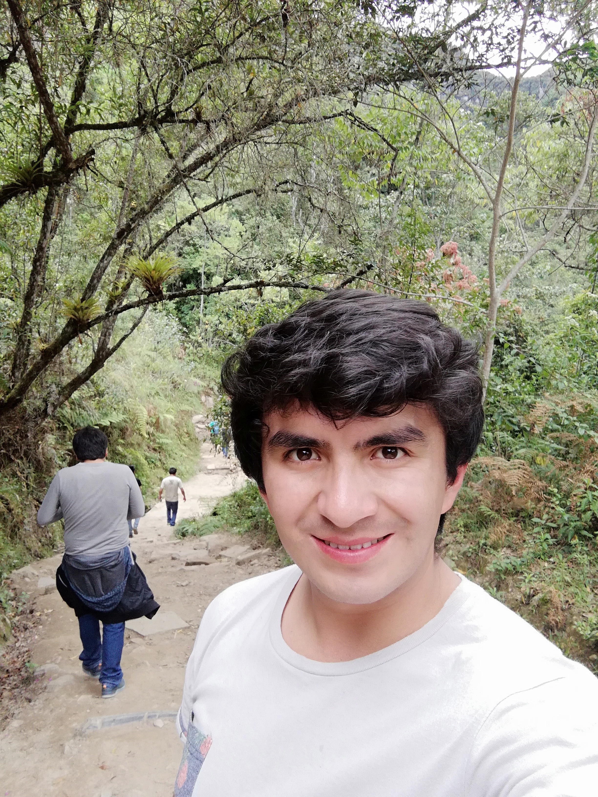

En el año 2012 me desempeñe como asistente dental en la clinica dental Tejada en la ciudad de tacna donde estuve laborando aproximadamente un año.Posteriormente labore como vnededor de calzados de caballero al por mayor y menor en la ciudad de Lima
en el centro comercial cinco continentes y actualmente estoy trabajando en el sector publico desempeñandome satisfactoriamente

Mi hobies:
Bilar
Cantar
Caminar por el campo
Ir al cine
Leer
Cocinar
Mi comida favorita: Ceviche
Pocos términos pueden escribirse de tantas formas como ceviche: de acuerdo al diccionario de la Real Academia Española (RAE) resulta válido escribir ceviche, cebiche, seviche o sebiche.El concepto alude a un plato típico del continente americano que
se prepara con mariscos o pescados crudos y adobados con jugo de naranja agria, lima ácida o limón. Cortados en pequeños trozos, los mariscos y los pescados también suelen marinarse con ajíes, cebollas y otros ingredientes.
Lugares que he visitado:
Lima
Tacna
Trujillo
Chachapoyas
Las ruinas de Kuelap
la laguna de San Nicolás en la ciudad de Cjamarca
Cantante favorito:
Bruno Mars
Peter Gene Hernández (nacido el 8 de octubre de 1985), más conocido por su nombre artístico Bruno Mars, es un cantante-compositor y productor musical estadounidense de ascendencia filipina por la vía materna y puertorriqueña por la vía paterna.
Criado en Honolulu, Hawái por una familia de músicos, Mars empezó a hacer música a una edad temprana (a los 2 años). Tras actuar en diversos espectáculos musicales en su ciudad natal durante toda su niñez, decidió seguir una carrera musical
y se trasladó a Los Ángeles después de graduarse de la escuela secundaria. Mars comenzó a producir canciones para otros artistas, al unirse al equipo de producción The Smeezingtons.
Actriz favorito:
Angelina Jolie
Actriz estadounidense conocida por su atractivo sexual y su nerviosismo, así como por su trabajo humanitario. Ganó un Oscar por su papel de apoyo como paciente mental en Girl, Interrupted (1999). Jolie, hija del actor Jon Voight, pasó gran parte
de su infancia en Nueva York antes de mudarse a Los Ángeles a los 11 años. Asistió al Lee Strasberg Theatre and Film Institute durante dos años y luego se matriculó en Beverly Hills High School. Más tarde estudió teatro en la Universidad de
Nueva York. Además de actuar en producciones teatrales, modeló y apareció en videos musicales.